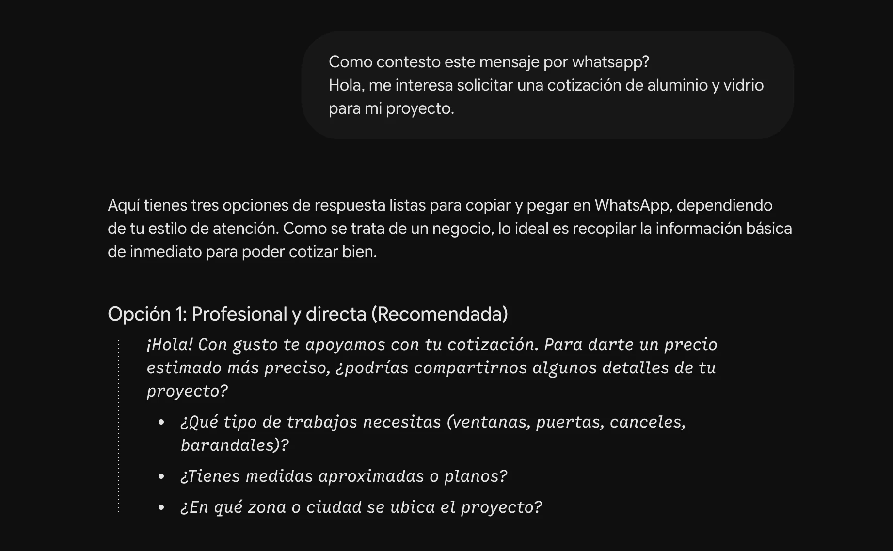
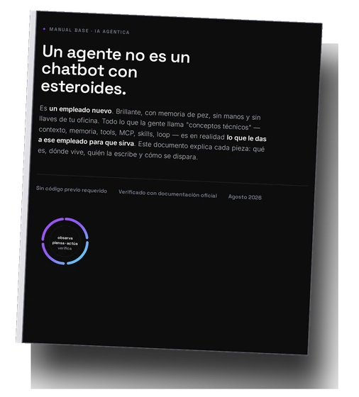

Masterclass · 45 min + 15 de preguntas
IA aplicada:
de la idea al resultado
Jorge Sierra
Mostrador
Es martes.
4:30 de la tarde.
¿Cómo se llamaba?
Se fue. No existe.
En línea
42 h
tiempo promedio de respuesta a alguien que te escribe
21x
si contestas en 5 minutos en vez de 30
La mitad,
nunca.
no recibe un segundo mensaje
Mostrador
No sabes
quién fue.
En línea
Sí sabes,
y no haces nada.
Ingeniero industrial
Pagos, facturación, nómina
2010: le enseñaba al buscador qué era basura
hoy se llama RLHF
Después
La semana de Beto
15 min de preguntas al cierre. Ve escribiéndolas en el chat.
Antes de empezar
menti.com/alwnav8h2c6h
¿Cómo usas la IA hoy?
No la uso
Le pregunto cosas
Escribe por mí
Está conectada a mi negocio
el link también va en el chat
88%
de los compradores le compra al primero que responde
encuesta a compradores, 2025
Dos
Registrar en Atrato = el momento en que el cliente empieza a existir
88%
de los compradores le compra al primero que responde
encuesta a compradores, 2025
Adivinar da puntos.
Dejar en blanco da cero.
No miente. Está entrenada para nunca quedarse callada.
OpenAI, Why Language Models Hallucinate, 2025
¿Te acuerdas cuál era?
42 h
Tiene la memoria que tú le armaste.
BETO
Brillante
Sin contexto
Con la memoria que tú le armes
La contrataste y nunca la diste de alta.
87%
dice que la IA ayuda a su gente a hacer más, no que la reemplaza
98%
no cambió su número de empleados
Trabajo que hoy no existe.
Tu semana
M
los dos martes, ya pasaron
M
el refri que subió de precio
J
el material del Buen Fin
S
las ocho que registraste
TODOS
LOS DÍAS
el diez que siempre se da
Operamos a ciegas.
Datos reales, conectados a un objetivo.
Beto no viene a traerte clientes.
Viene a arreglar lo de adentro.
Caso 0
Lo que no se le pide a Beto
¿Cabe en una hoja sin “depende”?
¿A qué hora cierran hoy?
Lunes a sábado de 10 a 8, domingos de 11 a 6.
Regla · instantáneo, gratis
¿Todavía tienen el queen de la promo? ¿Y sale a meses?
Escribe 1 para catálogo, 2 para sucursales, 3 para asesor.
el queen
Opción no válida.
Regla · el cliente se fue
¿Todavía tienen el queen de la promo? ¿Y sale a meses?
Sí, el queen de la promo es el iSleep Firm, está en $8,900, y sí hay en la de Zapopan. A meses con Atrato te lo confirman en un minuto con tu solicitud — ¿te mando el link, o prefieres fotos?
Beto · con las llaves
Caso 0 · de la idea al resultado
La regla dispara. Beto escribe.
Lo que necesitas
La lista de lo que te preguntan siempre igual. Sácala del WhatsApp de la última semana.
Lo que mides
Cuántas de esas preguntas ya no las contesta una persona.
Lo que ves
Tu vendedor deja de contestar “¿a qué hora cierran?” cuarenta veces al día. Y no pagaste IA por eso.
Caso 1
Beto contesta una pregunta
Pégale el error completo.
[demo en pantalla compartida]
Caso 1 · de la idea al resultado
Equivocarse aquí es gratis.
Lo que necesitas
El error, completo, tal cual sale en la pantalla. Nada más.
Lo que mides
Cuánto pasa desde que algo truena hasta que vuelve a funcionar. Hoy: horas o días.
Lo que ves
La terminal que iba a estar caída hasta mañana cobra en diez minutos.
Caso 2 · ← el lunes
Le das las llaves
[demo en pantalla compartida]
Todo lo que expliques más de dos veces debería ser un archivo.
30 sucursales. La misma respuesta.
Caso 2 · de la idea al resultado
Lo escribes una vez. Lo lee siempre.
Lo que necesitas
Quién eres, qué vendes, cómo hablas, qué prometes, y tu catálogo con el precio de hoy. Una vez.
Lo que mides
Cuánto tardas en contestar un WhatsApp. Hoy: 42 horas. Meta: minutos. Y: ¿tres sucursales contestan lo mismo?
Lo que ves
El cliente sigue hablando contigo. Las treinta sucursales suenan igual. El material del jueves sale el jueves.
Respaldo · caso 2

Con las llaves
Demo en vivo
la misma pregunta, con el contexto cargado
Caso 3 · ← el sábado
Le das la agenda
1Lee al cliente que tiene enfrente
2Maneja la objeción y cierra
3Se acuerda de las especificaciones de cuarenta modelos
4Busca si hay existencia en otra sucursal
5Registra al cliente en Atrato
6Contesta los WhatsApp mientras atiende al que tiene enfrente
7Escribe el seguimiento a los que sí tiene identificados
8Se acuerda de quién quedó registrado y no compró
Dos son su trabajo.
Lo que se va a llevar no es su trabajo. Es lo que no lo deja trabajar.
[demo en pantalla compartida]
Caso 3 · de la idea al resultado
Cuántas ventas cerraste nunca fue un KPI.
Lo que necesitas
Quién está registrado, qué vio, cuándo, si compró. Ya lo tienes: Atrato y WhatsApp.
Lo que mides
De los identificados, cuántos recibieron un segundo contacto. Hoy: la mitad. Meta: todos.
Lo que ves
La gente que se iba recibe un mensaje al tercer día. Una parte regresa. Cuánta, lo mides tú en un mes.
Caso 4 · ← el miércoles
Le das el catálogo
[demo en pantalla compartida]
Caso 4 · de la idea al resultado
Si esto empeorara mañana, ¿cómo te enterarías?
Lo que necesitas
Catálogo con el precio de hoy, existencias por sucursal, plazos reales. Conectados a Beto.
Lo que mides
Cuántas respuestas iban a salir mal y Beto las paró antes. Hoy no lo sabes — porque hoy salen.
Lo que ves
El refri del miércoles no vuelve a pasar.
Caso 5 · ← el diez, en el Buen Fin
Tú no calcules
El que decide cuánto se baja.
el puesto que no está en el organigrama
[demo en pantalla compartida]
20–25%
lo que dijo el modelo
12%
lo que dijo la calculadora
$31,014
lo que te dejas en la mesa
El error más caro no es cuando se equivoca. Es cuando se equivoca bonito.
Caso 5 · de la idea al resultado
Beto pregunta. La calculadora decide.
Lo que necesitas
Costo, inventario, ventas del año pasado, costo del financiamiento, cuánto quieres que quede en enero. Cinco números.
Lo que mides
Cuánto te quedó por cada colchón. No cuántos vendiste.
Lo que ves
El precio sale de tus números. En enero sabes cuánto ganaste antes de que contabilidad te lo diga.
Lo que te llevas
| Caso |
Necesitas |
Mides |
Ves |
| 0 |
Las preguntas que se repiten |
Cuántas ya no las contesta una persona |
Nadie vuelve a contestar el horario |
| 1 |
El error completo, pegado |
De que truena a que funciona |
La terminal cobra en diez minutos |
| 2 |
Quién eres y tu catálogo de hoy |
Cuánto tardas en contestar |
Treinta sucursales suenan igual |
| 3 |
Quién se registró y si compró |
Cuántos reciben segundo contacto |
Mensaje al tercer día. Una parte regresa |
| 4 |
Precio, existencia y plazo reales |
Cuántas respuestas paró antes de salir |
El refri del miércoles no se repite |
| 5 |
Cinco números tuyos |
Cuánto te quedó por unidad |
El precio sale de tus números |
La escalera de Beto
Contesta una pregunta
gratis
¿Cuánto te cuesta que se equivoque?
Encuesta 2
menti.com/alfv5yd6gsxu
¿En qué caso estás hoy?
misma sesión, no hay que volver a escanear
Y con lo mismo que viste…
Mostrador
¿Hay el queen en Zapopan? — 3 · 4
Un modelo contra otro, y ese resumen al cliente — 2
Gerente
El reporte del día y de la semana, armados solos — 3 · 4
El manual al que el vendedor nuevo le pregunta — 2
Compras
Qué lleva 90 días parado — regla
Qué se vendió esta semana por sucursal — 3
Cuánto pedir para el Buen Fin — 5
Postventa
“¿Ya está mi bici?” desde el estado del taller — 3
Recordatorio de cita — regla
La garantía: el análisis sí, la conversación difícil no
Dueño
“¿Cómo va el mes?” con el número y de dónde salió — 4
Margen real después de financiamiento, flete y devoluciones — 5
No es como Uber
Tarifa plana… y un día te cobran por kilómetro.
01
Pregunta el precio por uso.
02
Si solo habla en futuro, es promesa.
03
¿Qué se nota que no fuiste tú?
04
Ningún permiso que no le darías a un becario.
Lo que Beto puede hacer, se abarata.
Lo que no puede, sube de precio.
La IA no entiende tu negocio por ti.
Entenderlo y traducirlo es el trabajo.
Jorge Sierra
Construyo sistemas con IA que sí llegan al resultado.
ilhas.ai/jorge
Instagram @soyjorgesierra
TikTok @jorgesierrai
Instagram @ilhas.ai

Manual de 24 páginas — te llega por correo de Atrato.
el link también está en el chat